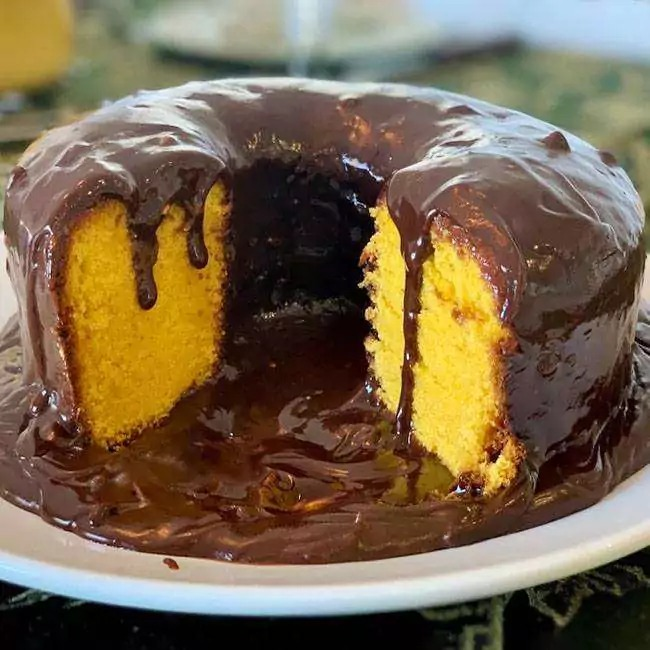

Bolo de Cenoura

Descrição
O bolo de cenoura é uma opção deliciosa e clássica. Aqui está uma receita simples para preparar um bolo de cenoura macio e saboroso, coberto com uma irresistível cobertura de chocolate:
Ingredientes
Para o bolo:
- 3 cenouras médias, descascadas e picadas
- 3 ovos
- 1 xícara de óleo vegetal
- 2 xícaras de açúcar
- 2 xícaras de farinha de trigo
- 1 colher de sopa de fermento em pó
- 1 colher de chá de essência de baunilha
- 1/2 colher de chá de sal
Para a cobertura de chocolate:
- 1/2 xícara de chocolate em pó
- 1/4 xícara de manteiga
- 1/4 xícara de leite
- 1 xícara de açúcar
- 1 colher de chá de essência de baunilha
Instruções:
- Pré-aqueça o forno a 180°C. Unte e enfarinhe uma forma de bolo.
- No liquidificador, bata as cenouras, os ovos, e o óleo até obter uma mistura homogênea.
- Em uma tigela grande, misture o açúcar, a farinha de trigo, o fermento em pó, a essência de baunilha e o sal.
- Adicione a mistura líquida aos ingredientes secos e mexa bem até formar uma massa uniforme.
- Despeje a massa na forma preparada e leve ao forno por aproximadamente 30-40 minutos, ou até que um palito inserido no centro saia limpo.
- Enquanto o bolo está assando, prepare a cobertura de chocolate. Em uma panela, misture o chocolate em pó, a manteiga, o leite e o açúcar. Leve ao fogo médio, mexendo constantemente, até que a mistura atinja o ponto de fervura.
- Reduza o fogo e cozinhe por mais 5 minutos, mexendo ocasionalmente. Retire do fogo, adicione a essência de baunilha e mexa bem.
- Após retirar o bolo do forno, espere esfriar por alguns minutos antes de desenformar. Cubra o bolo com a cobertura de chocolate enquanto ainda estiver morno.
- Deixe o bolo esfriar completamente antes de cortar e servir.
Essa receita resultará em um bolo de cenoura úmido e delicioso, com a cobertura de chocolate adicionando um toque extra de sabor. Aproveite!